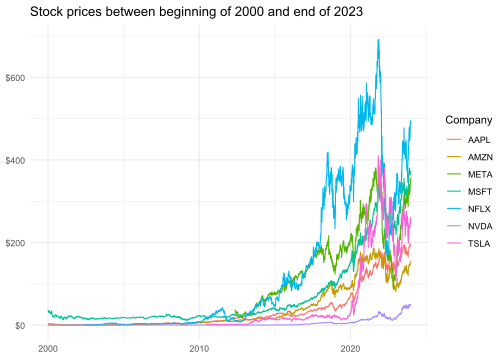
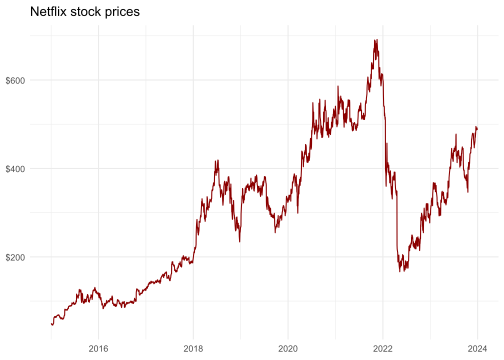
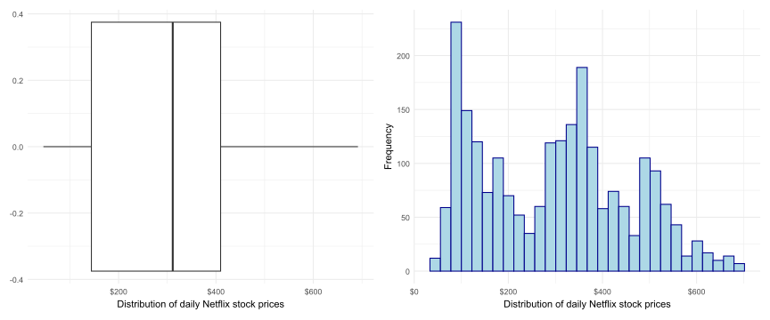
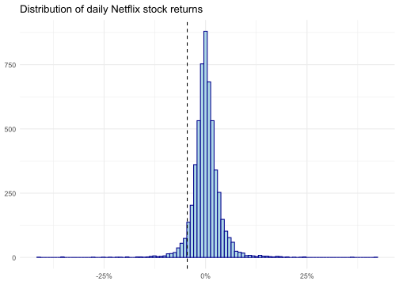
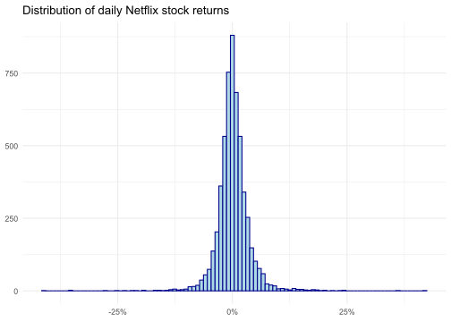

## ------------------------------
## Análisis del Precio de Acciones
##
## Autor(es):
##
## Fecha:
## ------------------------------
## cargamos todos los paquetes que usaremos en la sesión:
library(tidyverse)
library(tidyfinance)
library(scales)
## ---------------------------
### Ejercicio 1Análisis de Datos - Precio de Acciones
📅 Fecha Límite: Martes 18 de febrero, 6:00 p.m.
Formato de Entrega: Me envían el R Script al correo con el formato usual nombre_apellido.R. Si realizan el trabajo en parejas, nombren el archivo nombre1_apellido1_nombre2_apellido2.R. Antes de enviar el archivo, asegúrense de que su código se ejecuta correctamente en un nuevo R Script limpio.
Criterios de evaluación:
✔ Código correcto y bien estructurado: si el código no ejecuta, descuento la mitad del punto.
✔ Gráficos generados correctamente: Uso de ggplot2 con etiquetas claras y colores adecuados.
✔ Interpretación y análisis: Respuesta clara a las preguntas en comentarios y que sea concisa. Si su respuesta tiene más de 3 líneas es muy larga.
✔ Formato y organización: Código limpio, comentado y con títulos adecuados en el documento.
Ejercicio 1
Abran un R Script, y utilizando la siguiente plantilla, carguen el paquete tidyverse, tidyfinance y scales. Instalen los dos últimos paquetes desde la consola ya que es la primera vez que los vamos a utilizar.
Primero descargamos los precios diarios de varias acciones, como Amazon (AMZN), Meta (META), NVIDIA (NVDA), Apple (AAPL), Tesla (TSLA), Netflix (NFLX) y Microsoft (MSFT), directamente desde el proveedor de datos Yahoo Finance. Para descargar los datos, usamos la función download_data. Para profundizar en su uso, revisen el archivo de ayuda con ?download_data. Recomiendo especialmente la sección de ejemplos en la documentación. Solicitamos datos diarios para un período de 23 años.
price_data <- download_data(
type = "stock_prices",
symbols = c("AMZN","META","NVDA","AAPL","TSLA","NFLX", "MSFT"),
start_date = "2000-01-01",
end_date = "2023-12-31"
)download_data(type = "stock_prices") descarga datos del mercado de valores desde Yahoo Finance. La función devuelve un tibble con ocho columnas bastante autoexplicativas: symbol, date, el volumen diario (en número de acciones negociadas), los precios de mercado de apertura, máximo, mínimo, cierre y el precio ajustado en USD. Los precios ajustados están corregidos por cualquier factor que pueda afectar el precio de la acción después del cierre del mercado, como divisiones de acciones y dividendos. Estas acciones afectan los precios cotizados, pero no tienen un impacto directo en los inversionistas que poseen la acción. Por lo tanto, a menudo nos basamos en los precios ajustados al analizar los rendimientos que un inversionista habría obtenido al mantener la acción de forma continua.
Observemos qué tienen nuestros datos:
glimpse(price_data)Rows: 35,910
Columns: 8
$ symbol <chr> "AMZN", "AMZN", "AMZN", "AMZN", "AMZN", "AMZN", "AMZN",…
$ date <date> 2000-01-03, 2000-01-04, 2000-01-05, 2000-01-06, 2000-0…
$ volume <dbl> 322352000, 349748000, 769148000, 375040000, 210108000, …
$ open <dbl> 4.075000, 4.268750, 3.525000, 3.565625, 3.350000, 3.628…
$ low <dbl> 3.952344, 4.087500, 3.400000, 3.200000, 3.309375, 3.278…
$ high <dbl> 4.478125, 4.575000, 3.756250, 3.634375, 3.525000, 3.631…
$ close <dbl> 4.468750, 4.096875, 3.487500, 3.278125, 3.478125, 3.459…
$ adjusted_close <dbl> 4.468750, 4.096875, 3.487500, 3.278125, 3.478125, 3.459…Ejercicio 2
Completen el código a la izquierda para obtener la gráfica de la derecha:
price_data |>
ggplot(aes(x = date, y = adjusted_close, color = ______)) +
geom_line() +
labs(
x = NULL,
y = NULL,
color = "_______",
title = "Stock prices between beginning of 2000 and end of 2023"
) +
scale_y_continuous(labels = label_dollar()) +
theme_minimal()
Describan el gráfico anterior con 3 hechos puntuales.
Nota: labels = label_dollar() es una función del paquete scales que, como pueden ver en el gráfico, añade el símbolo de dólar a los números en el eje.
Ejercicio 3
Es claro que muchos de los precios son cero antes del año 2015. Elijan una de las empresas a partir del año 2015 basándose en el siguiente código donde elijo a Netflix:
netflix_data <- price_data |>
filter(symbol=="NFLX" & year(date)>2014)La variable date está en formato de fecha. Para poder usar el año, necesitamos la función year() como lo muestra el anterior código. Mis datos se ven así:
netflix_data# A tibble: 2,264 × 8
symbol date volume open low high close adjusted_close
<chr> <date> <dbl> <dbl> <dbl> <dbl> <dbl> <dbl>
1 NFLX 2015-01-02 13475000 49.2 48.7 50.3 49.8 49.8
2 NFLX 2015-01-05 18165000 49.3 47.1 49.3 47.3 47.3
3 NFLX 2015-01-06 16037700 47.3 45.7 47.6 46.5 46.5
4 NFLX 2015-01-07 9849700 47.3 46.3 47.4 46.7 46.7
5 NFLX 2015-01-08 9601900 47.1 46.5 47.8 47.8 47.8
6 NFLX 2015-01-09 9578100 47.6 46.9 48.0 47.0 47.0
7 NFLX 2015-01-12 12944400 47.1 45.3 47.2 45.5 45.5
8 NFLX 2015-01-13 18721500 46.0 45.9 47.0 46.3 46.3
9 NFLX 2015-01-14 19884900 47.1 45.7 47.4 46.3 46.3
10 NFLX 2015-01-15 11669000 46.5 45.8 46.8 46.3 46.3
# ℹ 2,254 more rowsEjercicio 4
Basándose en el código del Ejercicio 2, grafiquemos nuevamente la evolución de los precios de las acciones para la compañía que ustedes escogieron. En el caso de Netflix, la gráfica se ve de la siguiente manera:

Describan el comportamiento de los precios de su compañía con 3 hechos puntuales.
Ejercicio 5
Construyan el diagrama de caja y el histograma para el precio de las acciones de la empresa que escogieron. Para el caso de Netflix, los dos gráficos se ven así:

Describan la distribución de los precios de las acciones de su compañía con 3 hechos puntuales.
Ejercicio 6
Imaginen que no tenemos acceso a los datos de precios para todos los días. En este caso, solo disponemos de datos para 100 días y necesitamos estimar el precio promedio de la acción durante el período 2015-2023.
La función sample_n() toma una muestra aleatoria de los precios de las acciones de Netflix. En este caso, especificamos que el tamaño de la muestra sea de 100 días. Hagan lo mismo para su compañía.
#Establezcamos la semillar para elegir siempre la misma muestra:
set.seed(123)
netflix_sample <- sample_n(netflix_data, 100) Basándose en el siguiente gráfico, construyan la distribución de los precios de su compañía para la muestra. ¿Cómo cambia la distribución de los precios de la muestra con respecto a la distribución de la población en el punto anterior?

Ejercicio 7
Utilizando el comando t.test(), estimen un intervalo de confianza para el precio de las acciones de su compañía basado en la muestra de 100 días.
En el caso de Netflix, el resultado de la función es:
One Sample t-test
data: netflix_sample$adjusted_close
t = 20.685, df = 99, p-value < 2.2e-16
alternative hypothesis: true mean is not equal to 0
95 percent confidence interval:
257.7900 312.4947
sample estimates:
mean of x
285.1424 El intervalo de confianza al 95% es:
\[IC=[257.79, 312.49]\]
¿Captura este intervalo el parámetro problacional (el precio promedio de las acciones)?
mean(netflix_data$adjusted_close, na.rm = TRUE)[1] 298.6398El precio promedio de las acciones es 298.63. Por lo tanto, para el caso de Netflix, el intervalo de confianza sí incluye el parámetro poblacional.
Hagan este mismo análisis para la compañía que eligieron.
Ejercicio 8
Repitan el mismo análisis del punto anterior pero con un nivel de confianza del 90%.
Ejercicio 9
Utilizando la variable adjusted_close y la función lag() (que devuelve el valor anterior en un vector), calculamos los rendimientos netos diarios, definidos como:
\[r_t=\dfrac{p_t-p_{t-1}}{p_{t-1}}=\dfrac{p_t}{p_{t-1}}-1\]
Completen el siguiente código para crear una nueva base de datos returns con el rendimiento de una de las empresas. Seleccionen la compañía con la que han trabajado en los puntos anteriores.
returns <- price_data |>
filter(symbol == "______") |>
arrange(date) |>
mutate(______ = adjusted_close / lag(______) - 1) |>
select(symbol, date, return)Expliquen paso a paso qué hace el código anterior. Por ejemplo:
La primera línea crea un nuevo objeto llamado
returnsa partir de los datosprice_data.…
Ejercicio 10
Por ejemplo, los datos returns se verían de la siguiente manera para Netflix:
# A tibble: 5,439 × 3
symbol date return
<chr> <date> <dbl>
1 NFLX 2002-05-23 NA
2 NFLX 2002-05-24 0.0113
3 NFLX 2002-05-28 -0.0437
4 NFLX 2002-05-29 -0.0463
5 NFLX 2002-05-30 -0.0291
6 NFLX 2002-05-31 0.00467
7 NFLX 2002-06-03 0.0484
8 NFLX 2002-06-04 -0.00949
9 NFLX 2002-06-05 0.0262
10 NFLX 2002-06-06 0.0305
# ℹ 5,429 more rows¿Qué tal se ve la distribución del retorno para Netflix?

Construyan el mismo gráfico para su compañía y descríbanlo con 2 hechos puntuales.
Ejercicio 11
Por ahora, vamos a eliminar los datos faltantes. Recuerden que esto no es trivial ya que pueden existir razones por las cuales no tenemos información de los precios para ciertos días.
returns <- returns |>
drop_na(return)Ejercicio 12
A continuación, construyamos la distribución de los rendimientos diarios en un histograma como en el Ejercicio 10. Sin embargo, le añadimos una línea discontinua que indica el percentil del 5% de los rendimientos diarios, que es una aproximación (rudimentaria) del peor rendimiento de la acción con una probabilidad de, como máximo, 5%. El percentil 5 está estrechamente relacionado con el value-at-risk (VaR) histórico, una medida de riesgo que suele ser monitoreada por los reguladores.
La función quantile() nos permite calcular cualquier percentil de la distribución de un vector. Calculemos el percentil 5 al completar el siguiente código:
percentile_5 <- quantile(______$return, probs = 0.05)En el caso de Netflix, el percentil 5 es: -0.045.
Ejercicio 13
Completen el código a la izquierda para obtener la gráfica de la derecha para su compañía:
returns |>
ggplot(aes(x = ________)) +
geom_histogram(fill="lightblue",
color="darkblue",
bins = 100) +
geom_vline(aes(xintercept = percentile_5),
linetype = "dashed") +
labs(
x = NULL,
y = NULL,
title = "________"
) +
scale_x_continuous(labels = percent) +
theme_minimal()
Nota: labels = percent es una función del paquete scales que, como pueden ver en el gráfico, añade el símbolo de porcentaje a los números en el eje.
Ejercicio 14
Completen el siguiente código para calcular el volumen total de transacciones diarias en el mercado, definiéndolo como la suma del producto entre el número de acciones negociadas (volume) y el precio ajustado (adjusted_close) para cada día.
trading_volume <- price_data |>
group_by(____) |>
summarize(trading_volume = sum(_____ * ___________))Ejercicio 15
Completen el siguiente código para generar un gráfico de dispersión que analice la persistencia en el volumen de transacciones diarias. En el eje X, coloque el volumen total de transacciones del día anterior y en el eje Y, el volumen total del día actual.
trading_volume |>
ggplot(aes(x = lag(___________), y = trading_volume)) +
geom_point() +
labs(
x = "Previous day aggregate trading volume",
y = "__________________",
title = "Persistence in daily trading volume of 8 companies"
) +
scale_x_continuous(labels = unit_format(unit = "B", scale = 1e-9)) +
scale_y_continuous(labels = unit_format(unit = "B", scale = 1e-9)) +
theme_minimal()
¿Qué patrones observan en la relación entre estos valores? Calculen la correlación entre ambas variables para respaldar su análisis y explicar el patrón observado.
Nota: labels = unit_format(unit = "B", scale = 1e-9) es un argumento del paquete scales que, como pueden ver en el gráfico, formatea los valores para que se expresen en billones.